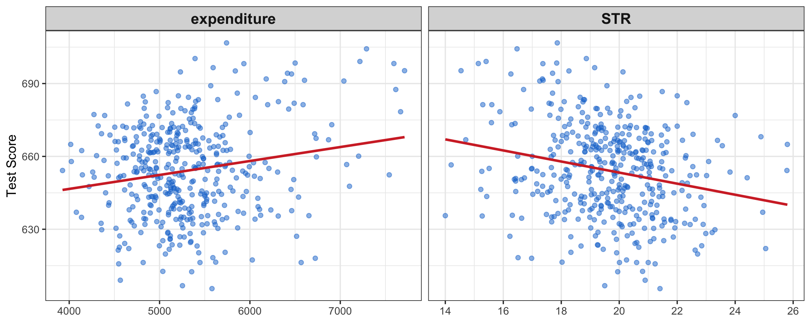
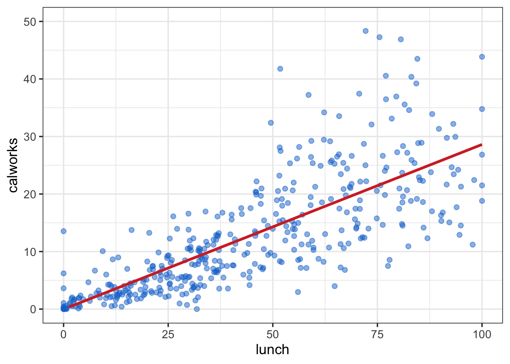

The multiple regression model extends the basic concept of the simple regression model to include multiple explanatory variables. This allows us to analyze the relationship between a dependent variable and several independent variables simultaneously.
A multiple regression model enables us to estimate the effect on \(Y_i\) of changing a regressor \(X_{1i}\) if the remaining regressors \(X_{2i}, X_{3i}, \ldots, X_{ki}\) are held constant.
Just like in the simple regression model, we assume the true relationship between \(Y_i\) and \(X_{1i}, X_{2i}, X_{3i}, \ldots, X_{ki}\) to be linear. The relation is given by the population regression function:
Now we go back to the example of test scores of students in California schools. Recall in the simple regression model, we regression test score on expenditure per student and found statistically significant positive effect. However, the R-squared (3.7%) was rather low and residuals plot shows substantial noise, indicating that there are other factors affecting test scores.
💡 We can improve the model by including more explanatory variables.
We expect that smaller class sizes lead to better test scores, as teachers can give more individual attention to each student. Therefore, we introduce class size (number of students per teacher) as an additional regressor.
where \(\text{STR}\) is the student-teacher ratio (representing class size).
1 Descriptive Analysis
1.1 Summary Statistics
# Data Preparationlibrary(tidyverse)f_name <-"https://raw.githubusercontent.com/my1396/FIN5005-Fall2025/refs/heads/main/data/CASchools_test_score.csv"cas <-read_csv(f_name,col_types =cols(county =col_factor(), # read as factorgrades =col_factor() ))cas <- cas %>%mutate(TestScore = (read + math) /2,STR = students / teachers )# summary statisticscas %>%select(TestScore, expenditure, STR) %>%summary()
TestScore expenditure STR
Min. :605.6 Min. :3926 Min. :14.00
1st Qu.:640.0 1st Qu.:4906 1st Qu.:18.58
Median :654.5 Median :5215 Median :19.72
Mean :654.2 Mean :5312 Mean :19.64
3rd Qu.:666.7 3rd Qu.:5601 3rd Qu.:20.87
Max. :706.8 Max. :7712 Max. :25.80
1.2 Scatter Plot
Scatter plot of TestScore against expenditure and STR:

Figure 1: Scatter plots of TestScore vs expenditure and STR. STR stands for students-teach ratio, proxying class size.
There seems to be a negative correlation between class size (STR) and test scores, as expected.
STR (–1.76):Holding expenditure constant, an additional student per teacher lowers the test score on average by 1.76 points. This effect is statistically significant at the 1% level.
Expenditure (0.0025):Holding STR constant, a one-unit increase in expenditure is associated with an increase of 0.0025 points in the test score. This effect is very small and statistically insignificant (p-value = 0.17).
2.2 Compare with Simple Regression
library(stargazer)model_simple <-lm(TestScore ~ expenditure, data = cas)stargazer(model_simple, model_multiple,digits =4,type ="html",dep.var.labels ="Test Score",covariate.labels =c("Expenditure", "STR"),notes ="<span>*</span>: p<0.1; <span>**</span>: <strong>p<0.05</strong>; <span>***</span>: p<0.01 <br> Standard errors in parentheses.",notes.append = F)
Dependent variable:
Test Score
(1)
(2)
Expenditure
0.0057***
0.0025
(0.0014)
(0.0018)
STR
-1.7632***
(0.6109)
Constant
623.6165***
675.5772***
(7.7197)
(19.5622)
Observations
420
420
R2
0.0366
0.0555
Adjusted R2
0.0343
0.0509
Residual Std. Error
18.7239 (df = 418)
18.5619 (df = 417)
F Statistic
15.8734*** (df = 1; 418)
12.2409*** (df = 2; 417)
Note:
*: p<0.1; **: p<0.05; ***: p<0.01 Standard errors in parentheses.
In the simple regression of TestScore on expenditure:
Expenditure had a positive and statistically significant effect (p < 0.001).
The effect size (0.0057 vs. 0.0025) was larger than in the multiple regression.
The overall explanatory power was improved (Adjusted \(R^2\) ≈ 0.0343 in the SLR vs. \(R^2\) ≈ 0.0509 in the MLR).
Thus, once STR is included, the apparent effect of expenditure becomes much smaller and loses statistical significance.
Q: Why does the effect of expenditure change when STR is included?
A: Expenditure is no longer significant in the multiple regression because expenditure and STR are correlated. Districts that spend more on education often also have smaller class sizes (\(\rho = -0.62\)).
In the simple regression, the positive effect of expenditure partly reflected the fact that higher spending was associated with lower STR, which itself improves test scores. Once STR is explicitly controlled for, the “true” partial effect of expenditure (holding class size constant) is close to zero.
This illustrates the importance of multiple regression: it separates the effect of each regressor while holding others fixed, and it reveals that the real driver of test scores here is class size, not expenditure.
2.3 Regression diagnostics
Residual Standard Error (RSE):
SLR: 18.72 (df = 418) → MLR: 18.56 (df = 417)
The MLR has a slightly smaller RSE, meaning it predicts test scores a bit more accurately.
Multiple \(R^2\):
SLR: 0.037 → MLR: 0.055
Adding STR increases the proportion of variation explained, though the overall fit remains modest.
Adjusted \(R^2\):
SLR: 0.034 → MLR: 0.051
The adjusted \(R^2\) also improves, showing STR provides genuine explanatory power beyond expenditure.
F-statistic (overall significance):
SLR: 15.87, p < 0.001 → MLR: 12.24, p < 0.001
Both models are statistically significant overall. The MLR has a smaller F-statistic because it includes more regressors, but still clearly improves explanatory power.
3 F-test for Significance of the Overall Regression
F-test is also known as the one-way analysis of variance (ANOVA) test. It tests whether the regression model as a whole is statistically significant.
F-test for that all \(k\) of the slope coefficients in a linear model are equal to zero, i.e., to test the exclusion of all explanatory variables except the intercept, \(\beta_0\). Formally speaking. \[
\begin{aligned}
&\text{H}_0: \beta_1 = \beta_2 = \cdots = \beta_K=0 \\
&\text{H}_1: \text{At least one of the } \beta_1, \beta_2,\ldots, \beta_K,\text{is not zero.}
\end{aligned}
\] This is referred to as the F-test for one-way ANOVA.
The test statistic is given by: \[
F = \left(\frac{n-k-1}{k}\right) \left(\frac{R^2}{1-R^2}\right) \sim F(k, n-k-1) .
\]
where \(F\) is \(F\)-distributed with \(k\) and \(n-k-1\) degrees of freedom.
The \(F\)-statistic can be rewritten as:
\[
\begin{split}
F &= \frac{R^2/k}{(1-R^2)/(n-k-1)} = \frac{SSE/k}{SSR/(n-k-1)} \\
&= \frac{\text{MSE}}{\text{MSR}} \\
& = \frac{\text{\green{Explained} Variation per degree of freedom}}{\text{\green{Residual} Variation per degree of freedom}} ,
\end{split}
\]
where
\(SSE\) is the explained sum of squares (variation explained by the regression model).
\(MSE = SSE/k\) is the mean square due to explained variation.
\(SSR\) is the residual sum of squares (variation not explained by the regression model).
\(MSR = SSR/(n-k-1)\) is the mean square due to residual variation.
We reject \(\text{H}_0\) if \(F>F_{\alpha}(k, n-k-1)\).
\(F_{\alpha}(k,n-k-1)\) is the \((1-\alpha)\) percentile in the \(F(k, n-k-1)\) distribution, corresponding to the level of significance, \(\alpha\).
The \(p\)-value is found by: \[
\text{P-value} = \mathbb{P}(F>F_{\text{obs}}) ,
\] where \(F_{\text{obs}}\) is your calculated/observed test statistic based on your data sample.
Large values of \(F\) give evidence against the validity of the null hypothesis. Note that a large \(F\) is induced by a large value of \(R^2\).
The logic of the test is that the \(F\) statistic is a measure of the loss of fit (namely, all of \(R^2\)) that results when we impose the restriction that all the slopes are zero. If \(F\) is large, then the hypothesis is rejected.
3.1 Example: F-test for the Multiple Regression Model
Null and alternative hypotheses\[
\begin{aligned}
&\text{H}_0: \beta_1 = \beta_2 = 0 \\
&\text{H}_1: \text{At least one of the } \beta_1, \beta_2,\text{is not zero.}
\end{aligned}
\] In plain language,
\(\text{H}_0\): Expenditure and STR have no effect on test scores.
\(\text{H}_1\): At least one of expenditure and STR has an effect on test scores.
Calculate the test statistic\[
F=\frac{(R^{2}/k)}{(1-R^{2})/(n-k-1)}
\]
where \(k\) is the number of regressors (not counting the intercept) and \(n\) is the sample size.
According to the \(F\) table, there is no exact value for \(df_2=417\), we use the value for \(df_2=\infty\) as an approximation.
We use the The critical value \(F_{0.95}(2, \infty) = 3.00\). The exact value is \(F_{0.95}(2, 417)\) is expected to be slightly larger than \(3.00\). But since our calculated \(F\) statistic is much larger than \(3.00\), we can safely reject the null hypothesis. It does not matter if the exact critical value is \(3.01\) or \(3.06\).
Decision rule and conclusion
Decision rule at 5 percent significance level: reject \(H_{0}\) if \(F>F_{\text{crit}}.\)
Since \(F_{\text{obs}}=12.24>F_{\text{crit}}=3.00\), we reject \(H_{0}\) and conclude that at least one of expenditure and STR has a statistically significant effect on test scores.
Interpretation in context
Statistically the regression is significant overall. That means at least one of the regressors, expenditure or STR, is linearly related to test scores. From the coefficient t tests in your summary we know STR is the significant predictor while expenditure is not significant once STR is included. In plain language this suggests that class size is driving the overall significance of the model rather than expenditure.
4 More Alternative Model Specifications
We now consider student demographics as additional regressors. We include the following variables:
eng: percentage of students who are English learners.
lunch: percentage of students who are eligible for free lunch.
calworks: percentage of students whose families receive aid from the California Work Opportunity and Responsibility to Kids (CalWORKs) program.
Note
Students eligible for CalWorks live in families with a total income below the threshold for the subsidized lunch program so both variables are indicators for the share of economically disadvantaged children.
We consider the following models:
\[
\begin{align*}
(I) \quad TestScore=& \, \beta_0 + \beta_1 \times STR + u, \\
(II) \quad TestScore=& \, \beta_0 + \beta_1 \times STR + \beta_2 \times english + u, \\
(III) \quad TestScore=& \, \beta_0 + \beta_1 \times STR + \beta_2 \times english + \beta_3 \times lunch + u, \\
(IV) \quad TestScore=& \, \beta_0 + \beta_1 \times STR + \beta_2 \times english + \beta_4 \times calworks + u, \\
(V) \quad TestScore=& \, \beta_0 + \beta_1 \times STR + \beta_2 \times english + \beta_3 \times lunch + \beta_4 \times calworks + u.
\end{align*}
\]
library(sandwich) # for robust standard errors# estimate different model specificationsspec1 <-lm(TestScore ~ STR, data = cas)spec2 <-lm(TestScore ~ STR + english, data = cas)spec3 <-lm(TestScore ~ STR + english + lunch, data = cas)spec4 <-lm(TestScore ~ STR + english + calworks, data = cas)spec5 <-lm(TestScore ~ STR + english + lunch + calworks, data = cas)# gather robust standard errors in a listrob_se <-list(sqrt(diag(vcovHC(spec1, type ="HC1"))),sqrt(diag(vcovHC(spec2, type ="HC1"))),sqrt(diag(vcovHC(spec3, type ="HC1"))),sqrt(diag(vcovHC(spec4, type ="HC1"))),sqrt(diag(vcovHC(spec5, type ="HC1"))))# generate a summarizing table using stargazerstargazer(spec1, spec2, spec3, spec4, spec5,type ="html",se = rob_se,digits =3,header = F,column.labels =c("(I)", "(II)", "(III)", "(IV)", "(V)"),model.numbers =FALSE,notes ="<span>*</span>: p<0.1; <span>**</span>: <strong>p<0.05</strong>; <span>***</span>: p<0.01 <br> Standard errors in parentheses.",notes.append = F)
Dependent variable:
TestScore
(I)
(II)
(III)
(IV)
(V)
STR
-2.280***
-1.101**
-0.998***
-1.308***
-1.014***
(0.519)
(0.433)
(0.270)
(0.339)
(0.269)
english
-0.650***
-0.122***
-0.488***
-0.130***
(0.031)
(0.033)
(0.030)
(0.036)
lunch
-0.547***
-0.529***
(0.024)
(0.038)
calworks
-0.790***
-0.048
(0.068)
(0.059)
Constant
698.933***
686.032***
700.150***
697.999***
700.392***
(10.364)
(8.728)
(5.568)
(6.920)
(5.537)
Observations
420
420
420
420
420
R2
0.051
0.426
0.775
0.629
0.775
Adjusted R2
0.049
0.424
0.773
0.626
0.773
Residual Std. Error
18.581 (df = 418)
14.464 (df = 417)
9.080 (df = 416)
11.654 (df = 416)
9.084 (df = 415)
F Statistic
22.575*** (df = 1; 418)
155.014*** (df = 2; 417)
476.306*** (df = 3; 416)
234.638*** (df = 3; 416)
357.054*** (df = 4; 415)
Note:
*: p<0.1; **: p<0.05; ***: p<0.01 Standard errors in parentheses.
4.1Interpretations
Adding control variables roughly halves the coefficient on STR.
The estimate is sensitive to the set of control variables used.
Conclusion: decreasing the student–teacher ratio ceteris paribus by one unit leads to an estimated average increase in test scores of about 1 point.
“Ceteris Paribus” means “all other things being equal”, i.e., holding all other regressors constant.
Adding student characteristics as controls increases
\(R^{2}\) and \(\bar{R}^{2}\) from 0.049 (spec (1)) up to 0.773 (spec (3) and spec (5)).
These variables can therefore be considered suitable predictors of test scores.
calworks is not statistically significant in all models.
Example: in spec (5), the coefficient on calworks is not significantly different from zero at the 5% level since \[
\left|\frac{-0.048}{0.059}\right| = 0.81 < 1.64.
\] For \(df = 415\), we can safely use the normal distribution table to find the critical value for a two-sided t-test at the 5% significance level as the sample size is large (\(df>30\)).
Commonly used critical values under normal distribution:
1.96 for 5% significance level;
1.64 for 10% significance level; and
2.58 for 1% significance level.
The effect of adding calworks to the base specification (spec (3)) on the coefficient of size and its standard error is negligible.
We can therefore consider calworks as a superfluous control variable, given the inclusion of lunch in this model.
The two variables are highly correlated (\(\rho = 0.74\)). See Figure 2 for a scatter plot.
cat("Correlation between lunch and calworks: \n\n")cor(cas %>%select(lunch, calworks)) %>%round(2)
Correlation between lunch and calworks:
lunch calworks
lunch 1.00 0.74
calworks 0.74 1.00

Figure 2: Scatter plots of lunch vs. calworks. Positive linear relationship between the two variables.